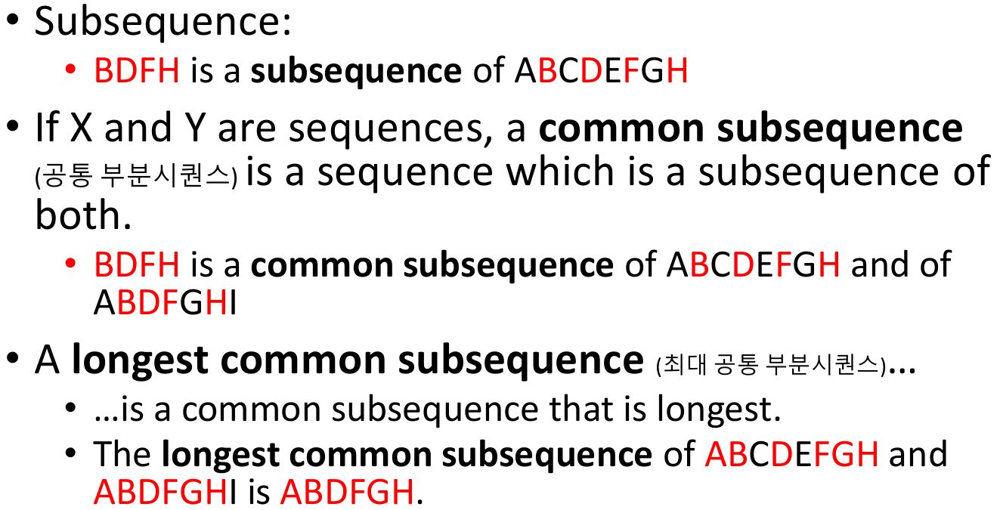
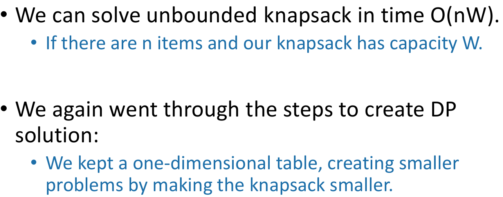
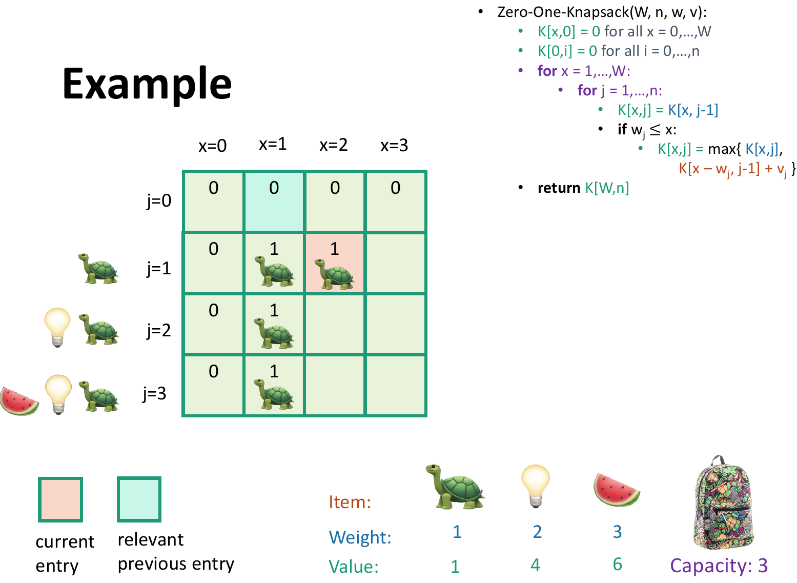

Algorithms week 12

Longest Common Subsequence

We sometimes want to find these
Recipe for applying dynamic programming
Step 1: optimal substructure
Step 2: Find a recursive formulation for the length of the longest common subsequence

Step 3: use dynamic programming to find the length of the longest common subsequence
LCS DP
Example
Step 4: If needed, keep track of some additional info so that the algorithm from step 3 can find the actual LCS.

Step 5: If needed, code this up like a reasonable person.
This pseudocode actually isn’t so bad
What have we learned?

Knapsack
Example: Knapsack problem
Some notation
Recipe for applying dynamic programming
Optimal structure
Step 2: Find a recursive formulation for the value of the optimal solution
Recursive relationship
Step 3: Use dynamic programming to find the value of the optimal solution
Let’s write a bottom-up DP algorithm
Step 4: If needed, keep track of some additional info so that the algorithm from Step 3 can find the actual solution.
Let’s write a bottom-up DP algorithm
Example
What have we learned?

0/1 Knapsack
Step 1: Identify optimal substructure.
Optimal substructure: try 1
This won’t quite work
Optimal structure: try 2
Our sub-problems:
Two cases
Case 1: optimal solution for j items does not use item j.

Case 2: optimal solution for j items uses item j
Step 2: find a recursive formulation for the value of the optimal solution.
Recursive relationship
Step 3: use dynamic programming to find the value of the optimal solution.
Bottom-up DP algorithm
Example




What have we learned?
Question
Independent set
Actually this problem is NP-complete. So we are unlikely to find an efficient algorithm
Step 1: identify optimal structure
Optimal structure
Case 1: the root is not in a maximal independent set